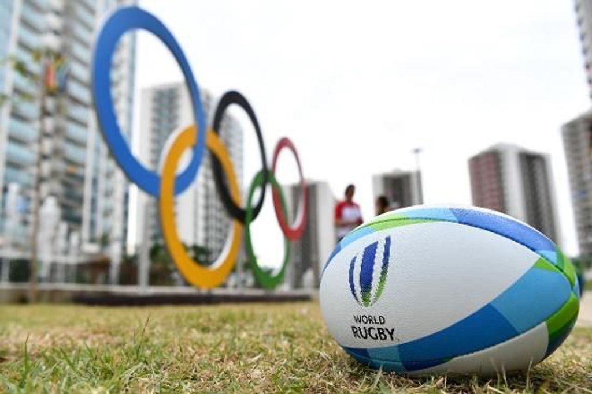
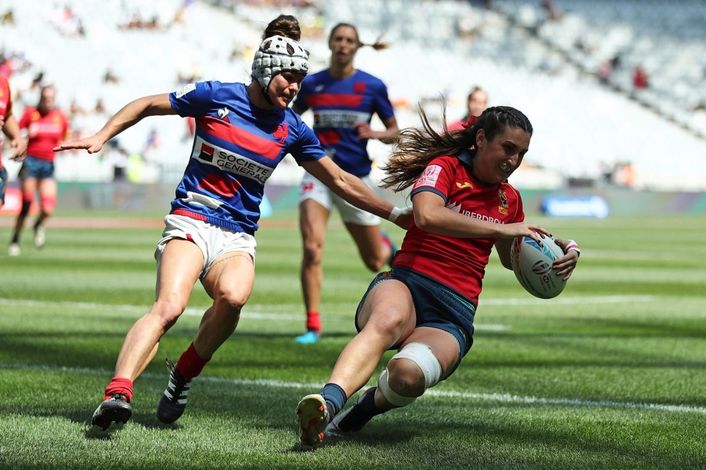

El rugby union o rugby a 15 formó parte del programa de los Juegos Olímpicos de Verano en cuatro de las siete primeras ediciones, si bien lo hizo únicamente en categoría masculina. El deporte debutó en los Juegos de París de 1900, incluyéndose con posterioridad en los Juegos de Londres de 1908, en los Juegos de Amberes de 1920 y en los Juegos de París de 1924. Poco después de estos últimos, el Comité Olímpico Internacional (COI) excluyó el rugby como deporte olímpico. Desde ese momento fueron numerosos los intentos de incluir de nuevo el rugby en el programa olímpico, hecho que se materializó el 9 de octubre de 2009, cuando la inclusión del rugby a siete para los Juegos Olímpicos de 2016 y 2020 fue aprobada por los miembros del COI en el congreso anual celebrado en la ciudad de Copenhague.
Esfuerzos para su inclusión Rugby 7 durante los Juegos de la Commonwealth de 2006 Italia en los Juegos Olímpicos de 1960, la Unión Soviética en los de 1980, y Corea del Sur en los de 1988 realizaron diversas propuestas para el retorno del rugby a los Juegos. En los Juegos de 1988 fue la propia International Rugby Board (IRB) la que rehusó la inclusión. El principal problema alegado por la IRB era que una de sus normas obliga a que los jugadores dispongan de un periodo de 7 días de descanso entre partido y partido.
 Dado que los Juegos tienen una duración oficial de 16 días, sería imposible celebrar un torneo dentro del marco de los mismos. Es por ello por lo que se planteó la inclusión del rugby a 7, puesto que los partidos tienen una menor duración y los torneos internacionales en los que participan hasta 16 selecciones se celebran en tan sólo un fin de semana. En 1995 el COI reconoció a la IRB como Federación Internacional y en 2002 se presentó un plan para la inclusión del rugby a 7, junto al golf y al Wushu. Pero el COI declaró que ningún nuevo deporte sería incluido en el programa olímpico, salvo que otro fuera excluido del mismo. En 2005 durante la reunión del COI en Singapur se decidió excluir al béisbol y al softbol de los Juegos, por lo que dos nuevos deportes podrían ser incluidos. El Rugby a 7 fue uno de los cinco deportes propuestos, junto al golf, el kárate, el squash y al patinaje sobre ruedas. Finalmente el squash y el kárate fueron los elegidos, aunque posteriormente no conseguirían las dos terceras partes de votos necesarios para su inclusión definitiva.
La IRB dentro de sus intentos por promocionar la inclusión dentro de los Juegos Olímpicos invitó en marzo de 2009 a dos delegados del COI a asistir a la Copa del Mundo celebrada en Dubái. Dicho evento congregó a 78 000 espectadores a lo largo de tres días y coronó a la selección de Gales en categoría masculina y a la de Australia en la femenina.
El 13 de agosto de 2009 se anunció que el rugby había sido recomendado para su inclusión en el programa olímpico, y que la decisión final se tomaría en la ciudad de Copenhague el mes de octubre de ese mismo año, durante la celebración del XIII Congreso del Comité Olímpico Internacional. Finalmente el 9 de octubre se aprobó la inclusión del rugby a siete en el programa olímpico de los Juegos Olímpicos de 2016 y 2020 por 81 votos a favor, 8 en contra y 1 abstención.